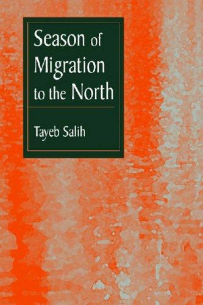
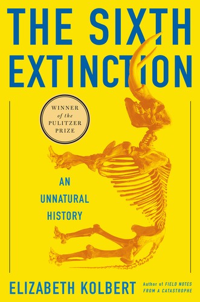
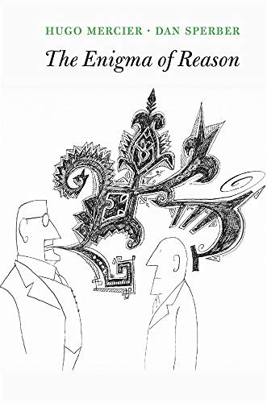
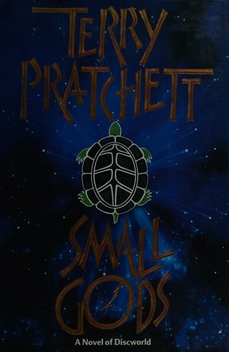
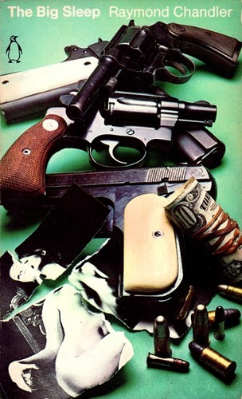
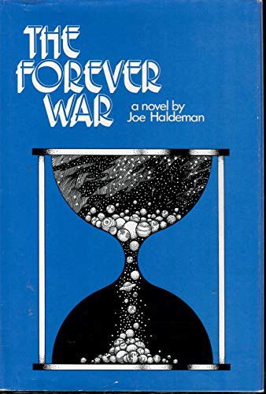

Recommendations for the week of 15 June 2026.
The highbrow picks deliberately spread across three growth edges the recent weeks left untouched: a translated non-Western novel from a region the shelves have never reached (Arabic/Sudanese), narrative ecology beyond Attenborough, and contemporary epistemology on how reasoning actually works. After three weeks tilting toward Latin-American fiction and speculative writing, this widens the aperture rather than deepening one vein. The comfort picks stay in well-loved territory — Discworld, hardboiled crime, idea-driven hard SF — each chosen as a non-owned book that keeps the invariants (a clean idea, no sentimentality) while asking little effort.





